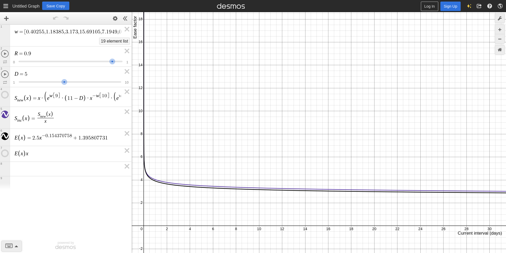

Converting FSRS to SM-2 parameters
Enhancing the Anki SM-2 algorithm by converting the ease factor from a scalar value to a mathematical function that takes two parameters, the current ease factor and current interval of the card, allows us to approximate FSRS's stability increase function with a simple power function.
According to the FSRS algorithm, the new stability after successful review is calculated as \[ S^\prime_r(D,S,R,G) = S \cdot (e^{w_8} \cdot (11-D) \cdot S^{-w_9} \cdot (e^{w_{10}\cdot(1-R)}-1) \cdot w_{15}(\textrm{if G = 2}) \cdot w_{16}(\textrm{if G = 4}) + 1) \]
and since
Let \(SInc\) (the increase in stability) denotes \(\frac{S^{'}_{r}(D, S, R, G)}{S}\) which is equivalent to Anki's ease factor.
we can approximate \(SInc\) with the function \(k \cdot x^a + b\) where \(k\) is the current ease factor which has the initial value provided by Starting Ease, \(x\) is the current interval, and \(a\) and \(b\) is some constant that provides the curve of best fit to the \(SInc\) function.
That is,
\[ \text{EaseFactor} = k \cdot x^a + b \]
in the Anki SM-2 next interval function
\[ \text{NewInterval} = \text{OldInterval} \times \text{EaseFactor} \times \text{IntervalModifier} \]
Retrieving optimized FSRS parameters
IMPORTANT: If you do not have many reviews for the optimizer to train on, or you have previously used Anki incorrectly, such as pressing the Hard button instead of the Again button to fail a card, it is recommended to use the default FSRS-5 parameters until your review history is large enough for optimization.
First, retrieve your optimized FSRS parameters. This can be done either by
- Directly in Anki
- FSRS Optimizer Jupyter Notebook
Anki
FSRS can safely be temporarily enabled in the deck options preset by
- Click on the Gear icon next to your deck.
- Click on the Options button.
- Navigate down to the FSRS section and click on the toggle button to enable FSRS.
- Leave Desired retention to the default value. Changing this has no effect on the final parameters.
- Copy and save the FSRS parameters somewhere for later.
- (Optional) Click on the Compute minimum recommended retention label and click the Compute button. Copy and save the Minimum recommended retention value somewhere for later.
- Close the deck options preset window and click on Discard to discard changes.
FSRS Optimizer Jupyter Notebook
Alternatively, if you don't want to temporarily enable FSRS, the FSRS Optimizer Jupyter Notebook can be used instead which provides extra statistics and graphs about your review history.
- Go to the FSRS4Anki Optimizer.
- Click on the Open in Colab button.
- Follow the instructions provided in the notebook.
- Scroll down to the Result section
- Copy and save the optimized FSRS parameters somewhere for later.
- (Optional) Scroll down to the Optimize retention to minimize the time of reviwes section, copy and save the suggested retention value somewhere for later.
Convert FSRS to SM-2
To convert your optimized FSRS parameters to SM-2
- Go to the FSRS to SM-2 notebook.
- Click on the Open in Colab button.
- Replace
parameterswith your optimized FSRS parameter values. - Replace
starting_easewith the same Starting Ease value in your deck options preset. - Replace
desired_retentionwith your desired retention. Optionally, you can use the Minimum recommended retention value from above. - Click on the Runtime button in the toolbar at the top.
- Click on the Run all button.
- Scroll down to for the suggested values.
For example, with the FSRS-5 default parameters and default Anki SM-2 settings,
parameters = [0.40255, 1.18385, 3.173, 15.69105, 7.1949, 0.5345, 1.4604, 0.0046,
1.54575, 0.1192, 1.01925, 1.9395, 0.11, 0.29605, 2.2698, 0.2315,
2.9898, 0.51655, 0.6621]
starting_ease = 2.5
desired_retention = 0.90
The output is
Replace your settings in the Deck Options for your deck with the values below.
Note:
1. Use `Graduating interval (good)` if you often press Good when first learning
a new card
2. Otherwise, use `Graduating interval (hard)` if you often press Hard when
first learning a new card
3. Otherwise, use `Graduating interval (again)` if you often press Again when
first learning a new card
4. If you're not sure, use `Graduating interval (good)`
This is because FSRS considers the first rating for New cards when training its
parameters. Since Anki SM-2 does not consider the first rating for New cards, it
is best to set the Graduating interval to the one you most often use
Graduating interval (again): 0
Graduating interval (hard): 1
Graduating interval (good): 3
Easy interval: 16
Replace the scheduler settings for your deck in the Custom scheduling field in
the Deck Options with the following values:
scheduler: {
// ... (other settings)
intervalModifier: 1.0,
calculateHardMultiplier: (currentEaseFactor, currentInterval) => {
return currentEaseFactor * Math.pow(currentInterval, -0.013242011) +
(-1.048236196);
},
calculateGoodMultiplier: (currentEaseFactor, currentInterval) => {
return currentEaseFactor * Math.pow(currentInterval, -0.154370758) +
(1.395807731);
},
calculateEasyMultiplier: (currentEaseFactor, currentInterval) => {
return currentEaseFactor * Math.pow(currentInterval, -0.178728777) +
(5.295133129);
},
},
Follow the instructions in the Jupyter notebook output as shown above.
- Click on the Gear icon next to your deck.
- Click on the Options button.
- Set the Graduating interval to one of the suggested values depending on your review habits. If you are not sure, use the Graduating interval (good) value.
- (Optional) Set the Minimum interval to one of the suggested graduating interval values depending on your review habits. If you are not sure, use the Graduating interval (good) value.
- Set the Easy interval to the suggested value.
- Scroll down to Advanced section, click on Custom scheduling, and
replace the
schedulersection in the associated deck indeckOptions - Click on Save.
Fine tuning the parameters
Assuming the Good button is pressed for each review, we can
graph the functions \(SInc\)
and calculateGoodMultiplier (similar graphs can be created for the Hard and
Easy buttons).

As shown in the graph above, as the interval of a card increases, the smaller the ease factor (ie, the increase in interval) which solves the long intervals for mature cards issue with SM-2. If the ease factor function grows too fast or too slow, you can modify the parameters accordingly.
Reschedule all cards immediately
FSRS has the option to reschedule cards on change which will reschedule all cards with new intervals immediately instead of being rescheduled as it comes up during reviews. While this can be temporarily used as part of the conversion from FSRS to SM-2, it is not recommended since it often results in a large number of cards becoming due. Instead, it is recommended to allow cards reschedule with the custom scheduler as it comes up during reviews. This means that it will take a few weeks or months before any visible results can be observed with the new scheduler.